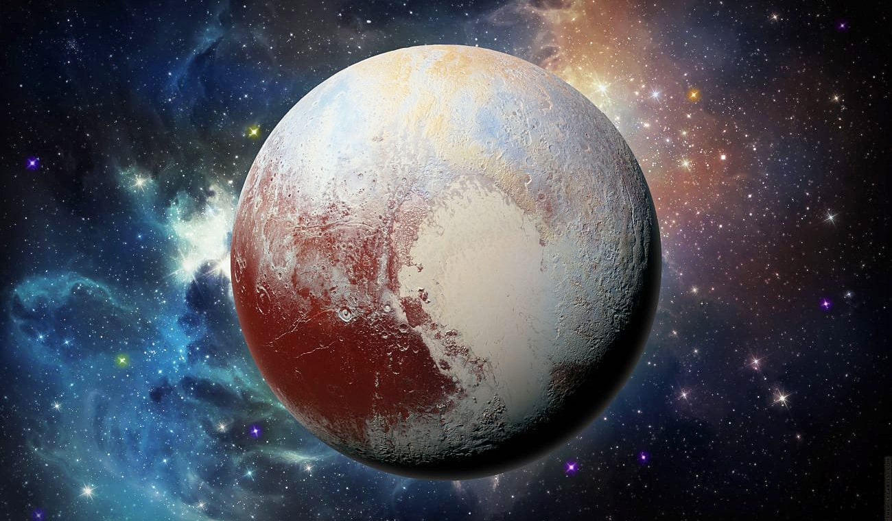

Плутон
 Сонце
Сонце Меркурій
Меркурій Венера
Венера Земля
Земля Марс
Марс Юпітер
Юпітер Супутник Юпитера
Супутник Юпитера Сатурн
Сатурн Уран
Уран Нептун
Нептун Плутон
Плутон Ця планета названа на честь грецького бога підземного царства. Відстань до Сонця — 5896,9 млн. кілометрів.
Плутон був описаний як «сніжна грудка» — суміш замерзлого метану і аміаку з температурою на поверхні — 237 °С. Атмосфери у Плутона нема. Це найменша планета Сонячної системи — розміром із земний Місяць. Орбіта Плутона не постійна і інколи заходить на орбіту Нептуна. Наприклад, у період між 1979 і 1999 роками Нептун був зовнішньою планетою Сонячній системі, а не Плутон. Плутон так повільно обертається навколо своєї осі, що один день дорівнює шести денним і ще 9 годин 18 хвилин. Під час плутонового дня Сатурн з'являється на його небі як яскрава зірка, адже під час присмеркового дня видні лише зорі в небі Плутона. Цій планеті потрібно 250 земних літ, щоб зробити один оберт навколо Сонця. У 1978 р. відкрито єдиний супутник — Харон, який вдвічі менший самого Плутона.
Періоди обертань Харона і Плутона співпадають, тому супутник ніколи не сходить і не заходить відносно горизонту, він спостерігається як вічно висячий у небі на одному місці. Цей супутник названий на честь перевізника душ померлих у загробний світ.
Вивчаючи темні і світлі візерунки Харона, вчені дійшли висновку, що він складається в основному з води, льоду і каменю з невеликою кількістю метану або без нього. Можливо, колись на Хароні, як і на Плутоні, був метан, але потім зник, оскільки у Харона дуже слабка гравітація. Гравітаційне притягання Плутона — близько 1/10 від сили земної гравітації.
Астрономи дуже зацікавлені у вивченні Плутона і Харона, оскільки ними висунута версія про те, що ця планета і супутник мають ранню стадію розвитку усіх планет нашої Сонячної системи. І чим більше ми дізнаємося про відношення між Плутоном і його супутником, тим більше дізнаємося про всі планети, включаючи і нашу.
